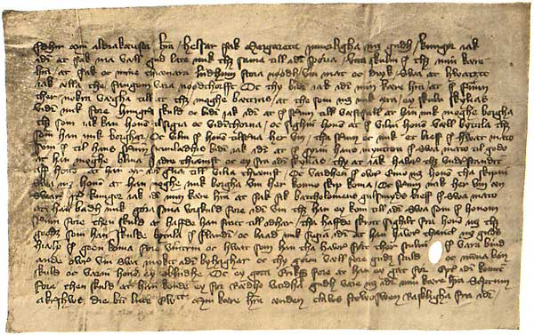

Liduord som skadan giorde kom gangandes til Bøø och Arne som fell var ther til bodes i garden fore honum. Liduord som skaden giorde gek i stogonæ oc møttæ bonden i dørnen och spurdæ maa jek gangæ i stogonæ. swaradæ bonden hwi mat thu ey ganga sa vel vil jek vnnæ tek i skaal som odrom vilt thu vel flygiæ tek, settes tha Liduordh til bordz och fek i skaal och draak Arne til som fell och Arne tok vid skalen oc takkadæ honum fore. En Liduord sagdæ got synth jw. swarade Arne som fell jek kan jkke vid thet skraffuet sagde Helge som atuistæ saken er geffuen, en liotha myt skraffuæ nokot swarade Arne laath oss tala vorth fader moll och moder moll myth verdæ ey framare en thaw haffuæ varet myth kwnnæ ikkæ vid thet malet myth kabbretta keptænæ. skraffuum ikke sa ath myth skraffuum ikke fra oss halsbeinet. En Liduord sturdæ vidher och swaradæ ingo. Sagdæ en Arnæ badæ æræ orden til och badæ skylu myth tenkæ ath karlen kan haffuæ eith saarth hierthæ hwer mynnes sith. Och stod sa Liduord vpoch tok sin skothynnæ och taladæ til Torgeir laat oss gangæ til vok[sin]æ och j thet samæ stak Liduord til Arnæ ij stynge och Arne fek ther ingen skadæ aff, stod tha Arne vp och rugthæ sin kniff hwar theiræ och stwngo hwer til odrom och giorde hwer annen saren. en Liduord stak Arne ii stynga i hoffuud och thet tridiæ i josten och ther doo han aff samstwndis gud hans siell nadæ.
Sammendrag: Thjostolf Sveinssön, Hr. Odd Alfssöns Underfoged i Skiens-Syssel, indmelder til Kong Hans de nærmere Omstændigheder, hvorunder Lidvord Aslakssön dræbte Arne Thorleifssön paa Gaarden Bö i Saudlands Sogn i Thelemarken.
Kilde: Efter Orig. p. Perg. i Deichmanns Biblioth. i Christiania. Seglene mangle. Nummer: 961. Dato: 6 Mai 1489 Sted: Skien.